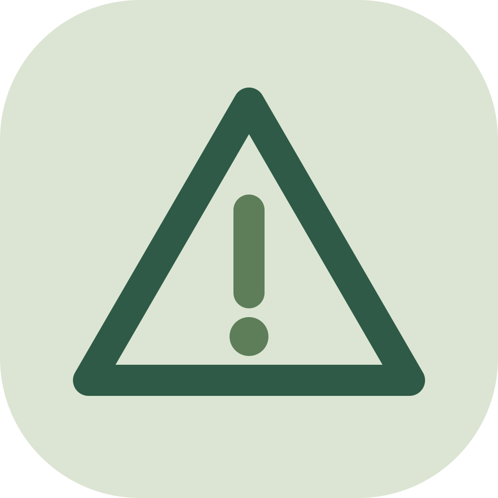

Product Recall Check API: CPSC, NHTSA, FDA & EU Safety Gate
On the HTTP APIAnswers "is this product recalled anywhere, and for what hazard?" for a product name, brand, model, UPC/EAN barcode or VIN: one row per query with recalled yes/no, each recall's date, hazard, remedy and official link, from US CPSC, NHTSA, FDA enforcement reports and the EU Safety Gate. Built for AI agents in e-commerce, resale, procurement and product compliance, and for people who want one sourced answer instead of four searches.
Pricing (pay per event): $0.005 per product checked, recall found or not. A query where a source could not be checked is returned with a warning and costs nothing.
Where to get it
The same data and the same rows on every channel; pick the one your agent or code already uses.
| Channel | How | Pay |
|---|---|---|
| HTTP API | POST https://api.boscolabs.dev/v1/product-recalls with your key (get a key, $5.00 free trial) | $0.005 per product checked (every source answered), prepaid credits |
| MCP | https://api.boscolabs.dev/mcp (remote, same key) or https://api.boscolabs.dev/mcp/free (no key: find and plan) · setup | $0.005 per product checked (every source answered), prepaid credits |
| x402 | POST https://api.boscolabs.dev/v1/product-recalls without a key: pay per call, no account (how) | $0.005 per product checked (every source answered), in USDC on Base |
Questions agents ask
- “Before we list this used Peloton Bike+ and this 2012 Honda Accord for sale, check whether either has been recalled, for what hazard, and cite the source.”
Example
Input
{ "queries": ["Peloton Bike+", "3418178586009", "1HGCP2F31CA000000"], "maxMatches": 10 }Output
{
"schema_version": "1",
"query": "Peloton Bike+",
"query_type": "text",
"vehicle": null,
"recalled": true,
"match_count": 3,
"summary": "Recall found for 'Peloton Bike+': 3 match(es) in US CPSC recalls. Newest: US CPSC recalls 2025-11-06 'Peloton Recalls Original Series Bike+ Exercise Bikes Due to Fall and Injury Hazards', hazard: The bike's seat post assembly can break during use, posing fall and injury hazards to the user. Matching is by words: confirm the exact model at source_url.",
"matches": [
{
"source": "cpsc",
"source_name": "US CPSC recalls",
"recall_id": "26067",
"date": "2025-11-06",
"title": "Peloton Recalls Original Series Bike+ Exercise Bikes Due to Fall and Injury Hazards",
"product": "Peloton Original Series Bike+ Model PL02",
"firm": "Peloton Interactive Inc., of New York",
"hazard": "The bike's seat post assembly can break during use, posing fall and injury hazards to the user.",
"remedy": "Consumers should immediately stop using the recalled exercise bikes and contact Peloton for a free repair. Peloton is offering consumers a free seat post that can be self-installed.",
"classification": null,
"status": null,
"jurisdiction": "US",
"source_url": "https://www.cpsc.gov/Recalls/2026/Peloton-Recalls-Original-Series-Bike-Exercise-Bikes-Due-to-Fall-and-Injury-Hazards"
}
],
"sources_checked": [
{"source": "cpsc", "source_name": "US CPSC recalls", "ok": true, "matches": 3, "coverage": "all CPSC recalls"},
{"source": "fda_food", "source_name": "US FDA enforcement reports (food)", "ok": true, "matches": 0, "coverage": "the 100 newest matching enforcement reports"},
{"source": "fda_drug", "source_name": "US FDA enforcement reports (drugs)", "ok": true, "matches": 0, "coverage": "the 100 newest matching enforcement reports"},
{"source": "fda_device", "source_name": "US FDA enforcement reports (medical devices)", "ok": true, "matches": 0, "coverage": "the 100 newest matching enforcement reports"},
{"source": "eu_safety_gate", "source_name": "EU Safety Gate alerts", "ok": true, "matches": 0, "coverage": "weekly reports 2025-11-07 to 2026-11-06 (52 weeks)"}
],
"warnings": [],
"input_error": null,
"source_url": "https://www.cpsc.gov/Recalls/2026/Peloton-Recalls-Original-Series-Bike-Exercise-Bikes-Due-to-Fall-and-Injury-Hazards",
"checked_at": "2026-11-06T06:38:16+00:00"
}What you get
| Field | Type | Meaning |
|---|---|---|
schema_version | string | Output schema version. |
query | string | The query as given (spaces tidied). |
query_type | string | How the query was read: text = product name, brand or model; upc = 8-14 digit barcode; vin = 17-character VIN (decoded with NHTSA vPIC); vehicle = year make model. |
vehicle | object | null | For vin and vehicle queries: {make, model, model_year} used for the NHTSA lookup; null otherwise. |
recalled | boolean | null | true = at least one recall or alert matched; false = no match in every source that applies; null = no match but a source could not be checked (see warnings). |
match_count | integer | Number of matching recalls found (only the newest maxMatches are in matches). |
summary | string | One sentence an agent can pass on: the newest match and its hazard, or 'No recall found' with the sources checked. |
matches | array | Matching recalls and alerts, newest first, at most maxMatches. |
sources_checked | array | Every source that applied to this query: {source, source_name, ok, matches, coverage}. ok false = not checked (see warnings). coverage says what was searched (e.g. the Safety Gate weeks). |
warnings | array | Sources that could not be checked (or NHTSA vPIC down for a VIN), in plain words. Rows with warnings are not charged. |
input_error | string | null | Why this query could not be checked, e.g. a VIN with a wrong check digit, with NHTSA vPIC's own error text and a valid example; null when the query was fine. Rows with an input_error are not charged. |
source_url | string | null | Official record of the newest match; null when nothing matched. |
provided_by | string | Who compiled this row; cite together with source_url. |
attribution | string | Source notices for the sources checked (CPSC credit, NHTSA, openFDA disclaimer, the EU Safety Gate acknowledgement). |
checked_at | string | When the check ran (ISO 8601, UTC). |
Use with AI agents (MCP)
Add this URL to your MCP client (Claude, Cursor, VS Code, ...) to load the Actor as a tool through the Apify hosted MCP server. It signs you in with OAuth or accepts Authorization: Bearer <APIFY_TOKEN>. It works once the Actor is listed on the Apify Store; until then use the HTTP API or the remote MCP server at https://api.boscolabs.dev/mcp.
https://mcp.apify.com?tools=bosco_labs/product-recallsFor “Before we list this used Peloton Bike+ and this 2012 Honda Accord for sale, check whether either has been recalled, for what hazard, and cite the source.” the agent passes:
{ "queries": ["Peloton Bike+", "2012 Honda Accord"] }one row per query (typically 2-9 KB), stable snake_case fields, ISO dates, null for unknown. summary is one sentence the agent can repeat; recalled is the yes/no/unknown; source_url is the official record. A run takes about 12 seconds (measured on 2026-11-06 for the two queries above; most of it is reading the 52 weekly EU reports, which are read once per run however many queries you send).
Or call the Apify API: POST https://api.apify.com/v2/acts/bosco_labs~product-recalls/run-sync-get-dataset-items with the input as JSON body. Cost: $0.005 per product checked (every source answered) (HTTP API).
HTTP API
Also on the Bosco Labs HTTP API (beta): same input and same rows as the Actor, $0.005 per product checked (every source answered) from prepaid credits (max 20 products per call). Get a key with a $5.00 free trial; see prices and limits.
curl https://api.boscolabs.dev/v1/product-recalls \
-H "Authorization: Bearer $BOSCO_API_KEY" \
-H "Content-Type: application/json" \
-d '{"queries": ["Peloton Bike+", "2012 Honda Accord"]}'Input fields
| Field | Type | Meaning |
|---|---|---|
queries | array (required) | What to check, one per entry: a product name, brand or model ("Peloton Bike+"), a UPC/EAN barcode of 8-14 digits ("3418178586009"), a 17-character VIN ("1HGCP2F31CA000000") or a vehicle as year make model ("2012 Honda Accord"). Each entry gives one result row and at most one charge; repeats are checked once. 1-50 entries. Required. |
maxMatches | integer | How many recalls to list per query, newest first, e.g. 10 (default). match_count still gives the total found. Range 1-50; the price does not change. |
sources | array | Which sources to check, any of "cpsc", "nhtsa", "fda_food", "fda_drug", "fda_device", "eu_safety_gate", e.g. ["cpsc", "eu_safety_gate"]. Default (or empty) = all six. Each query only goes to the sources that fit it (VINs to NHTSA and EU Safety Gate). Same price for any number of sources. |
euWeeks | integer | How many of the latest weekly EU Safety Gate reports to search, e.g. 52 (default, about one year). Range 1-260 (five years); more weeks take longer. The US sources always cover their full history. |
Sources, licence and limits
Why is "no recall found" charged? Because it is the answer you asked for: every source that applies was searched and none had a match, and sources_checked documents what was covered. That is the result a reseller or compliance check needs on file. What is never charged: a query where any applicable source could not be checked (the row is returned with warnings and recalled: null if nothing matched), a VIN that does not decode cleanly (input_error), bad input, or a run where no source answered.
How reliable is a match? Matching is by words, so it is fuzzy both ways. A common word can match unrelated products ("charger"), and a product listed under another name or spelling can be missed. Brand + model ("Peloton Bike+", "Philips DreamStation") works best; a model number or barcode is most precise. Always confirm the exact model, batch or date range at source_url before acting: a recall often covers only some serial numbers or production dates.
Does a VIN match mean that car is affected? Not necessarily. NHTSA's open recalls API works by year, make and model, so the answer lists recalls for that model line. Whether one specific vehicle is included, or was already repaired, only the manufacturer or NHTSA's VIN lookup at nhtsa.gov/recalls can say (that page uses a CAPTCHA, so this Actor does not use it).
What is covered?
| Source | What | History |
|---|---|---|
cpsc US Consumer Product Safety Commission | Consumer product recalls (toys, furniture, appliances, sporting goods, ...) | All published recalls |
nhtsa US NHTSA | Vehicle recalls by year, make and model | All campaigns for that vehicle |
fda_food, fda_drug, fda_device openFDA | FDA enforcement reports: food (incl. infant formula, supplements), drugs, medical devices | The 100 newest matching reports per category |
eu_safety_gate European Commission | EU/EEA alerts on dangerous non-food products and vehicles | The latest euWeeks weekly reports (default 52, up to 260) |
What is not covered? Car seats, tyres and other vehicle equipment (NHTSA equipment recalls), EU food alerts (RASFF), UK, Canadian, Australian and other national recall lists, USDA meat and poultry recalls, and recall photos. FDA enforcement reports can lag the press release by a few weeks.
How fresh is it? Every run queries the sources live. CPSC, NHTSA and openFDA update as the agencies publish; EU Safety Gate publishes a weekly report every Friday.
Attribution. Recall data: U.S. Consumer Product Safety Commission (CPSC); no endorsement by CPSC implied. Vehicle recall data: U.S. NHTSA (public information); no endorsement implied. FDA enforcement reports via openFDA (CC0); do not rely on openFDA to make decisions regarding medical care. Alerts from the Rapid Alert System for dangerous non-food products, published free of charge on the Safety Gate website (https://ec.europa.eu/safety-gate-alerts) © European Union, 2005-2026; shortened and reformatted, not otherwise changed. Reuse terms of each source, quoted: see LEGAL.md.